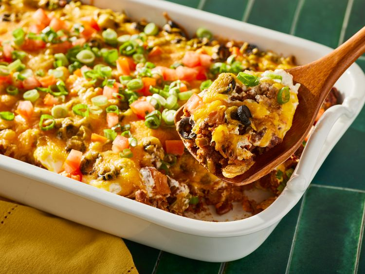

Home
Taco Casserole
This taco casserole with ground beef and tortilla chips is easy to make and very tasty. I often substitute with ground turkey and low-fat dairy products, and it's still delicious! Serve this casserole with chips, salsa, and green salad. Courtesy By ANDREALF63 (from allrecipes.com)
Ingredients
- 1 pound lean ground beef
- 2 cups salsa
- 1 (16 ounce) can chili beans, drained
- 3 cups tortilla chips, crushed
- 2 cups sour cream
- 1 (2 ounce) can sliced black olives, drained
- ½ cup chopped green onion
- ½ cup chopped fresh tomato
- 2 cups shredded Cheddar cheese

Steps :
- Gather all ingredients.
- Preheat the oven to 350 degrees F (175 degrees C). Spray a 9x13-baking dish with cooking spray.
- Heat a large skillet over medium-high heat. Cook and stir ground beef in the hot skillet until browned and crumbly, 8 to 10 minutes.
- Stir in salsa, reduce heat, and simmer until liquid is absorbed, about 20 minutes. Stir in beans; cook until heated through.
- Spread crushed tortilla chips over the bottom of the baking dish; spoon beef mixture on top. Spread sour cream over beef, then sprinkle olives, green onion, and tomatoes on top. Cover with Cheddar cheese.Bake in the preheated oven until hot and bubbly, about 30 minutes.
- Serve and enjoy!